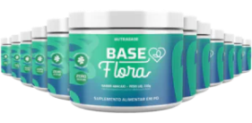
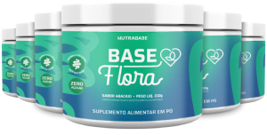

Parabéns!
Você acabou de ganhar um super desconto.
+ POTE EXTRA
+ DESCONTO
+ FRETE GRÁTIS
*VÁLIDO PELOS PRÓXIMOS 15 MINUTOSEscolha o seu plano e GANHE + 1 pote grátis
Melhor valor
12 Potes + 1
12x R$ 107,23
ou R$ 1068,00 à vista
Economize: R$ 810,80
COMPRE AGORAFrete Grátis
Mais vendido
6 Potes + 1
12x R$ 64,34
ou R$ 640,80 à vista
Economize: R$ 447,20
COMPRE AGORAFrete Grátis
Veja os resultados de quem usa BASE FLORA
Ana, 37 anos
Arquiteta
“Há anos lutava contra a constipação crônica que me causava desconforto físico e emocional. Ficava dias sem ir ao banheiro. Tinha vergonha de falar sobre o assunto e sofria em silêncio. Tudo mudou quando descobri a Base Flora. Em poucas semanas, senti meu intestino funcionando regularmente pela primeira vez em anos. A sensação de leveza e alívio foi emocionante. Mais do que resolver meu problema físico, a Base Flora me devolveu a autoconfiança e a alegria de viver. Hoje, compartilho minha história para inspirar outras pessoas a cuidarem da sua saúde intestinal! O Base Flora foi meu ponto de virada!”
Carla, 42 anos
Dona de casa
“Como mãe de dois filhos pequenos, minha rotina sempre foi muito corrida e estressante. Isso acabou afetando minha saúde intestinal. Vivia com inchaço, gases e dores abdominais. Meu nutricionista recomendou o Base Flora e, no início, confesso que estava bem desconfiada. Mas já no primeiro semana de uso, percebi a diferença. Com o tempo, percebi que meu intestino estava mais regulado, pois eu tinha mais energia e disposição para cuidar da minha família. O Base Flora foi fundamental para que minha saúde fosse completamente transformada!”
Marcos, 35 anos
Nutricionista
“Passei anos da minha vida lutando contra a compulsão alimentar e a obesidade. Meu intestino estava sempre sobrecarregado e inflamado, o que afetava minha saúde física e mental. Quando conheci o Base Flora, não imaginava o impacto que ele teria na minha jornada de reeducação alimentar e saúde. Com o tempo, meu intestino sentiu-se renovado e passou a funcionar de forma mais eficiente. Minha compulsão foi diminuindo, e com isso, minha autoestima e qualidade de vida melhoraram drasticamente. O Base Flora foi uma peça-chave na minha transformação. Hoje, 40 kg mais leve, sou uma nova pessoa!”
Garantia de Satisfação 30 dias
Acreditamos tanto em nossos produtos que oferecemos uma Garantia de Satisfação. Se você não estiver satisfeito com sua compra por qualquer motivo, em até 30 dias, devolvemos o valor investido no produto, integralmente.
*Aplicável apenas na primeira item da mesma produto adquirido. Consulte nossa Política de Trocas e Devoluções.

Fórmula desenvolvida por especialista
Dr. Sandro Haddad é farmacêutico, especialista em suplementação e plantas medicinais há mais 10 anos, formado pela Universidade do Espírito Santo. Além disso, é palestrante e pesquisador no campo da medicina natural e da capacidade de autocura do corpo humano.